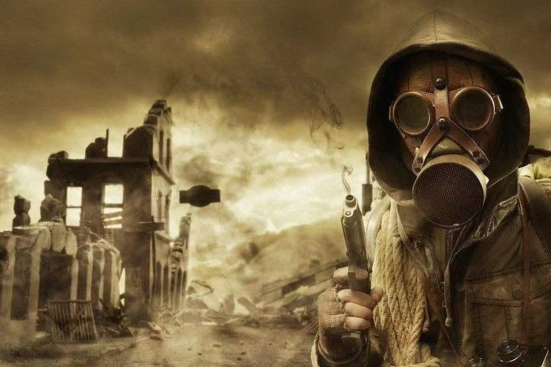

At BOMB Batteries, we employ only the most qualified (and slightly
unhinged) experts in the fields of energy storage, radiological
sciences, and plausible deniability. Our team combines decades of
experience from various government agencies that may or may not
exist, military research facilities, and several nuclear programs
that were allegedly shut down in the 1980s.
Our Leadership Team
Dr. Vladimir Ka-Boom, CEO & Founder
With three PhDs in Nuclear Physics, Chemical Engineering, and
"Energy Solutions" (from an institution whose records were
mysteriously lost in a fire), Dr. Ka-Boom founded BOMB Batteries
after a prestigious career at [REDACTED] National Laboratory. His
vision: batteries so powerful they might accidentally level a
small town.
Dr. Selina Fission, CTO
After leaving her position at the International Atomic Energy
Agency under what she describes as "mutual disagreement about the
definition of 'excessive' enrichment," Dr. Fission joined BOMB to
head our R&D department. Her innovations include our proprietary
"Controlled Chain Reaction" technology that makes our batteries
technically legal in most jurisdictions.
Our Specialized Departments
Research & Development
Our R&D team works tirelessly in a remote underground facility
(location classified) to develop batteries that push the
boundaries of international law and physics. Recent achievements
include creating a watch battery with the energy density of
approximately 2kg of TNT.
Quality Control
All BOMB products undergo rigorous testing in our specialized
bunkers. Our quality control team wears radiation suits not
because they need to, but because they look cool. Every battery is
guaranteed to deliver explosive performance without the pesky
actual explosion (in most cases).

Our Quality Control team celebrating another successful
non-explosion day
Legal Department
Perhaps the hardest working team at BOMB, our legal department
specializes in creative interpretations of international energy
regulations, weapons treaties, and the Geneva Convention. They've
successfully argued that our batteries aren't dangerous - they're
just "enthusiastically energetic."